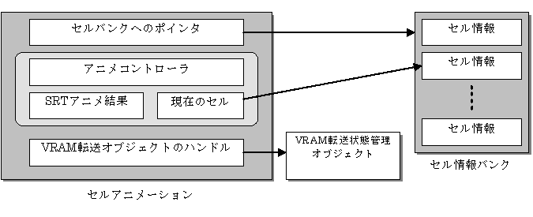

Cell Animation Overview
Conceptual Diagram

Description
Cell animations created with NITRO-CHARACTER uses Cell Animation for play back. Cell Animation uses an internal Animation Controller to animate cells. By using the animation data and its animation result (index value), the referenced cell data association is executed by this Cell Animation.
Internal Data of the Cell Animation
Pointer to the Cell Data Bank
The pointer to the cell data bank read to the main memory is stored. The cell data bank is static data and cannot be rewritten. The cells used by the Cell Animation must be included in the cell data bank designated by this pointer.
Pointer to the Cell Data Being Displayed
The pointer to the cell currently displayed on the screen in animation playback is stored. The cell designated by this pointer exists in the cell data bank that is designated by the pointer to the cell data bank.
SRT Animation Result
The cell position, rotation, and scale changed by animation playback are stored.
Handle for Cell VRAM Transfer State Object (cellTransferStateHandle)
Used when supporting VRAM transfer animations. The handle for the cell VRAM transfer state object holds the status and information that the cell which carries out the VRAM transfer should manage and save. If it is not used, NNS_G2D_INVALID_CELL_TRANSFER_STATE_HANDLE takes its place.
See Also
None.
Revision History
12/06/2004 Initial version.